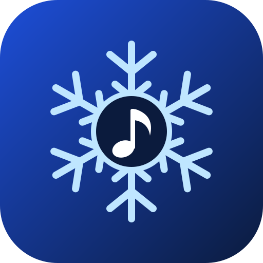

Note antippen und unten ändern · Leertaste = Start/Stop · Strg+Z = Rückgängig · Tasten: C–H = Ton, 1–6 = Notenwert (Ganze … 1/32), R = Pause, I = Eingabemodus
Eingabemodus: Notenwert wählen, dann Ton (C–H) tippen. Der Cursor springt weiter, am Ende kommt automatisch ein neuer Takt dazu.